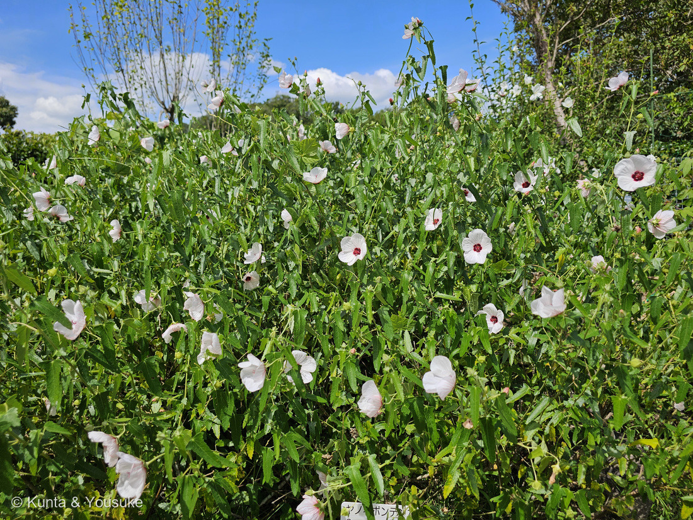
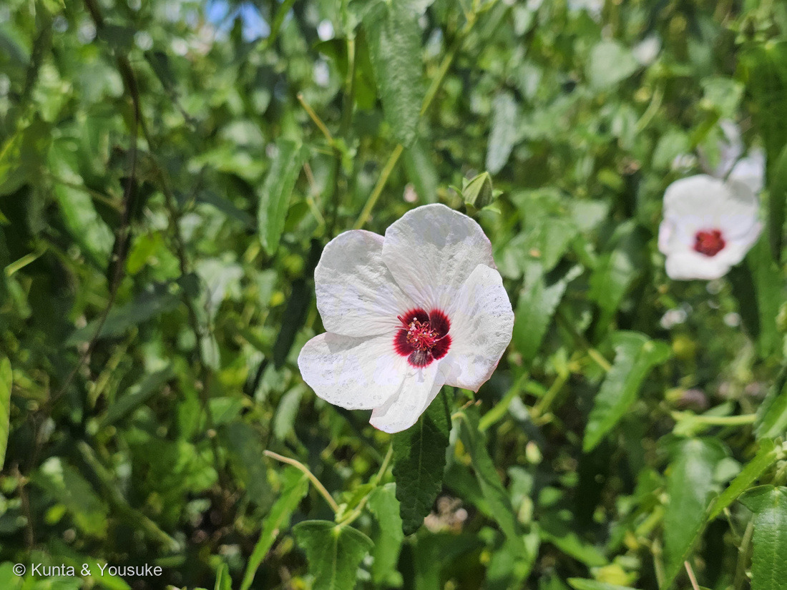

地図を読み込んでいるよ…
🔍 写真も地図も、押しているあいだ拡大して見られるよ（スマホは指を置いてすこし待ってね）。
🌍 の地図＝この子がもともと自生している場所を緑に。南アメリカ。三河の植物観察は「帰化種 南アメリカ（ブラジル、ボリビア、アルゼンチン）原産」とし、英語版Wikipediaは「Brazil, Bolivia, Argentina, Paraguay and Uruguay」とする。日本へは園芸植物として入り、関東以西で逸出帰化（日本語版Wikipedia）。⚠オーストラリアでも長く在来と思われていたが、いまはそう考えられていない（英語版Wikipedia）。
⭐南アメリカの子だよ。三河の植物観察は「帰化種 南アメリカ（ブラジル、ボリビア、アルゼンチン）原産」とし、英語版Wikipediaは「Brazil, Bolivia, Argentina, Paraguay and Uruguay」とする——⭐この地図は広いほう（5か国）で塗ってある。⭐園の名札も「南米」とだけ書いてあった。⚠⚠日本は塗っていない——園芸植物として入ってきたものが逃げ出して、関東以西で野生化した子（日本語版Wikipedia「園芸植物として利用されたものが関東以西で逸出帰化」）＝⭐この国のヤノネボンテンカは、みんな「もとは誰かの庭にいた子」なんだ。⭐⭐⭐そしてこの地図には、もうひとつ塗れなかった場所がある＝オーストラリア。英語版Wikipediaは「It was previously considered to be native to Australia as well, but is no longer thought to be.（以前はオーストラリアにも自生すると考えられていたが、いまはそう考えられていない）」と書いている——⭐⭐日本でも、オーストラリアでも、この子は長いあいだ「もとからいた顔」をして住んでいた。⭐ちなみに、同じアオイ科で「南米のムクゲみたい」と燻太さんが言ったその170 ムクゲは、中国原産で奈良時代に渡来した子だよ。
⚠ 地図は国（日本と中国だけ県・省）までしか塗れないから、ほんとうの分布より広く見えていることがあるよ。地図はだいたいの場所。正確なところは、上の文を見てね。
ヤノネボンテンカ（矢の根梵天花）
Pavonia hastata Cav.
別名 · タカサゴフヨウ（高砂芙蓉）／英名 spearleaf swampmallow・pink pavonia
アオイ科 · Malvaceae（ヤノネボンテンカ属）── 15人目のアオイ科。ヤノネボンテンカ属は図鑑ではじめて
燻太さんの一言「この子はいわゆる南米のムクゲみたいな立ち位置なのかな？」──半分あたりで、半分はずれ。そして、はずれのほうが面白かったよ
⭐⭐⭐ 名前と学名の由来 ── 矢じりと、梵天花と、二人のスペイン人
- 和名「矢の根梵天花」＝矢の根（矢じり）のような葉＋ボンテンカ（梵天花・Urena）に似た花、から。
- ⭐⭐種小名 hastata は「矛型の」（大阪市立長居植物園）。⭐和名も学名も、おなじ「葉の形」を言っている。⭐三河の植物観察は葉を「細く、長さ3〜10㎝の鉾型、先がやや尖り、基部が張り出し」と書いている＝まさに矢じりだね。
- ⭐⭐⭐属名 Pavonia は、スペインの植物学者 ホセ・アントニオ・パボン（José Antonio Pavón Jiménez・1754〜1844）にちなむ。⭐名づけたのは、同じスペインのアントニオ・ホセ・カバニレス。
- ⭐⭐⭐そして、学名のうしろについている「Cav.」が、そのカバニレス本人。——⭐属に友だちの名前をつけた人が、この種の名づけ親でもあるんだ。
- ⭐⭐カバニレスは、この図鑑で2回目。——1回目は047 ダリア。⭐あの花に、スウェーデンの植物学者ダールの名前をつけたのも、この人だよ。
- 別名は タカサゴフヨウ（高砂芙蓉）。
この植物のこと
- アオイ科ヤノネボンテンカ属。⭐15人目のアオイ科（003/038/039/067/094/102/103/104/170/200/203/204/205/206）で、⭐ヤノネボンテンカ属は図鑑ではじめて。
- 高さは「50〜200㎝。茎は直立する」「常緑低木」（三河）。⚠日本語版Wikipediaは「50〜80cm」とする。
- 花は「直径4〜6㎝と小型。花弁は5個、白色、中心部が赤色、裏に赤色の筋がある」（三河）。⭐写真②のとおりだね。
- 花期は7〜11月（三河）。⚠日本語版Wikipediaは8〜9月。⭐朝ひらいて夕方しぼむ一日花（同）。
- 葉の両面に細かな星状毛がある（日本語版Wikipedia）。⭐091 アカメガシワや206 ワタと同じ、アオイ科まわりでよく出てくる毛だよ。
- 実は「直径約8㎜の5分果」（三河）＝5つに割れる。⚠「表面に網状の隆起紋があるが、トゲは無い」（日本語版Wikipedia）。
- ⭐⭐おもしろい話がひとつ。——英語版Wikipediaは「It was previously considered to be native to Australia as well, but is no longer thought to be.（以前はオーストラリアにも自生すると考えられていたが、いまはそう考えられていない）」と書いている。⭐⭐⭐日本でも、オーストラリアでも、この子は長いあいだ「もとからいた顔」をして住んでいたんだ。
同定について ── 園のラベルで確定
⭐⭐⭐ 燻太さんの問い ── 「南米のムクゲみたいな立ち位置なのかな？」
⭐⭐ 半分そのとおりで、半分ちがうよ。——⭐そして、ちがうほうが、この子のいちばん面白いところなんだ。
まず、似ているところ。
- 同じアオイ科。
- ⭐⭐花弁が5枚で、中心が濃い赤（＝底紅）。170 ムクゲも、まったく同じ作りだよ。
- ⭐⭐朝ひらいて、夕方しぼむ一日花（日本語版Wikipedia「朝開花し、夕方に萎む」）。170も一日花。
- どちらも低木（ムクゲは落葉低木、この子は常緑低木）。
- ⭐そして、どちらもよそから来て、日本に住みついた。
⭐ だから燻太さんの見立ては、かなりいいところを突いている。——でも、ちがうところが3つある。
- ⚠①属がちがう。——ムクゲはフヨウ属 Hibiscus／この子はヤノネボンテンカ属 Pavonia。⭐「南米版のムクゲ」というより、「アオイ科のいとこ」だね。
- ⚠⚠②日本での立ち位置がちがう。——ムクゲは奈良時代から、人がわざわざ植えてきた木。⭐この子は、園芸で入ってきて逃げ出した子（日本語版Wikipedia「園芸植物として利用されたものが関東以西で逸出帰化」）。⭐植えられている子と、勝手に住みついた子。
- ⭐⭐⭐③そして、決定的なちがい。——この子は、ひらかない花をもっている。
⭐⭐⭐ ひらかない花 ── 閉鎖花
⭐ 三河の植物観察は、この子についてこう書いている。
「萼より花弁が短い閉鎖花をつける」
⭐⭐ 花弁が萼より短いから、つぼみのまま、ひらけない。——⭐それでいいんだ。⭐⭐⭐閉鎖花は、ひらかないまま、自分の花粉で実をつける花。⭐虫が来なくても、確実に種ができる。
英語版Wikipediaには、もっと具体的に書いてあった。
「The first flowers in spring are often cleistogamous and much smaller than those that come later in the season.（春のはじめの花は、しばしば閉鎖花で、あとの季節に来る花よりずっと小さい）」
⭐⭐ つまりこの子は、二枚の札をもっている。
- ⭐ひらく花（写真②） ── 白くて、まん中が暗い赤で、虫を呼ぶ。⚠でも、来てくれるかは分からない。
- ⭐ひらかない花（閉鎖花） ── 誰も呼ばない。かわりに、確実に種ができる。
⭐⭐⭐ 「逃げ出した先で住みつけた」理由のひとつは、これかもしれない。⚠これはぼくの読みで、そう書いてある出典には当たれなかったよ。
⭐⭐ 図鑑で閉鎖花の話は2人目。——1人目はマルバツユクサ（202 オオボウシバナのおまけ）で、三河は「通常の結実のほか、地下に閉鎖花をつけ、自家受精して種子を作る特殊な形態を示す」と書いていた。⭐⭐でも「登録した子じたいが閉鎖花をもっている」のは、この子がはじめてだよ。
⏳ ⚠写真②の株には、小さな緑のつぼみがたくさんついている。——⚠そのどれが閉鎖花なのかは、写真からは決められなかった。⭐宿題にしておくね。
⭐ 同じ花壇に、三人ならんでいた
⭐⭐ この写真、204 モミジアオイの20秒あとで、206 ワタの25秒まえに撮られている。
⭐ つまり、燻太さんは園のアオイ科の花壇を歩いていたんだ。——赤いモミジアオイ、白いヤノネボンテンカ、そして綿をつけるワタ。⭐⭐同じ科の三人が、同じ花壇に、20秒ずつの距離でならんでいた。
⭐ 花のつくりをくらべると、みんな親戚だと分かるよ。——花弁5枚、まん中から突き出る雄蕊柱、そして204と205とこの子は、中心が濃い色。
参考：三河の植物観察・ヤノネボンテンカ（Pavonia hastata Cav.／アオイ科 Malvaceae ヤノネボンテンカ属／帰化種 南アメリカ（ブラジル、ボリビア、アルゼンチン）原産／高さ50〜200㎝。茎は直立する／常緑低木／葉は互生し、細く、長さ3〜10㎝の鉾型、先がやや尖り、基部が張り出し／直径4〜6㎝と小型。花弁は5個、白色、中心部が赤色、裏に赤色の筋がある／萼より花弁が短い閉鎖花をつける／花期は7〜11月／果実は直径約8㎜の5分果。分果は網状の脈があり、1種子が入る）／Wikipedia・ヤノネボンテンカ（別名 タカサゴフヨウ（高砂芙蓉）／南米原産で、園芸植物として利用されたものが関東以西で逸出帰化／高さ50〜80cm／長さ3–10cmの鉾形、基部は切形で鈍鋸歯縁／両面に細かな星状毛／直径4–6cm／白〜淡桃色で長さ約2cm、基部に暗赤色の紋がある／開花期は8–9月、朝開花し、夕方に萎む／閉鎖花を付ける場合がある／分果は5個で、表面に網状の隆起紋があるが、トゲは無い）／Wikipedia (English)・Pavonia hastata（spearleaf swampmallow, pink pavonia／native to Brazil, Bolivia, Argentina, Paraguay and Uruguay／The first flowers in spring are often cleistogamous and much smaller than those that come later in the season／It was previously considered to be native to Australia as well, but is no longer thought to be）／大阪市立長居植物園・ヤノネボンテンカ（花期 7－10月／南アメリカ／葉が矢じりに似ており、花がボンテンカに似ることから／hastataは「矛型の」を意味する／フヨウやムクゲ似た一回り小さい花を咲かせ、茶花などに利用される）／⭐広島市植物公園の名札「ヤノネボンテンカ／Pavonia hastata Cav./ 南米／アオイ科」（⚠掲示物なので写真は公開せず、出典として引くだけにしてある）